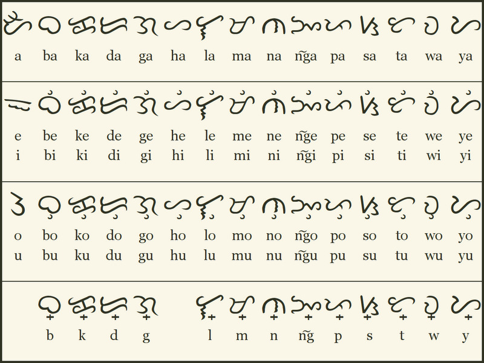

Buhayin ang sinaunang sining ng Baybayin sa modernong panahon.
Alamin, likhain, at ipagdiwang ang ating kultura!
Mabuhay!
Tuklasin ang isang mundo kung saan bawat titik ay may kahulugan at bawat salita ay bahagi ng ating paglalakbay.
Malugod ka naming sasalubungin dito, kung saan ang pagmamahal sa ating kultura ay nagsasanib sa kasiyahan ng bagong kaalaman.
Halina’t samahan kami sa isang paglalakbay upang muling mabigyang-buhay ang yaman ng Baybayin.
Baybayin History
Ang Baybayin ay isang sinaunang sulat ng ating mga ninuno na ginamit ng mga Tagalog at iba pang pangkat.
Hindi lamang ito paraan ng pagsulat, kundi sagisag din ng ating pagkakakilanlan at malikhaing diwa bilang Pilipino.
Sa panahon ngayon, muling binubuhay ang Baybayin sa mga digital na plataporma at sa mga kilusang pangkultura.
The Baybayin Alphabet
Ang Baybayin Alphabet ay bahagi ng ating sinaunang pagkakakilanlan.
Ito ang sulat ng ating mga ninuno na nagsilbing patunay ng yaman ng ating kultura at wika.
Ngayong muling binubuhay, tayo’y may pagkakataong matutunan at ipagmalaki ito.

Explore & Learn
Make learning fun with interactive games and activities! Choose a mode below:
📖 Story Mode
Unlock lessons step by step and progress through Baybayin.
🔤 Matching Mode
Match Baybayin characters with their Filipino counterparts.